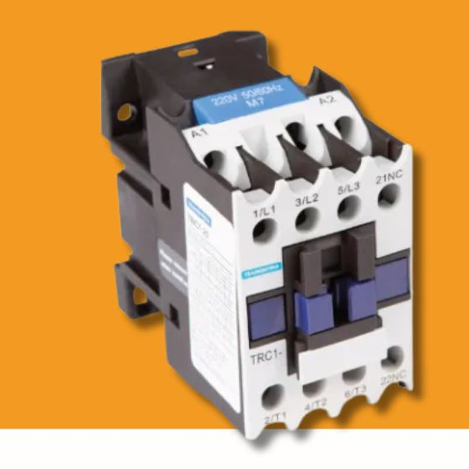

Contator Tramontina: para que serve e como escolher o modelo adequado
Equipe Mais Mendes · 5 min de leitura

Protótipo: texto de exemplo para mostrar o layout do artigo.
O contator é a chave que liga e desliga cargas pesadas, como motores, bombas e compressores, a partir de um comando de baixa corrente.
Ele funciona como um interruptor acionado por uma bobina. Quando a bobina recebe tensão, os contatos principais fecham e a carga é ligada. Sem tensão, uma mola abre os contatos.
O que olhar antes de comprar
- Corrente nominal (AC-3): deve ser igual ou maior que a corrente do motor.
- Tensão da bobina: 220 V CA é a mais comum em quadros de comando.
- Número de polos: tripolar para motores trifásicos.
- Contatos auxiliares: necessários para selo e sinalização.
Contator e disjuntor: um não substitui o outro
O disjuntor protege o circuito contra sobrecarga e curto. O contator faz o acionamento. Em partida de motor, os dois trabalham juntos, muitas vezes com um relé térmico.
Dúvida sobre qual modelo usar? Fale com a nossa equipe técnica pelo WhatsApp antes de comprar.